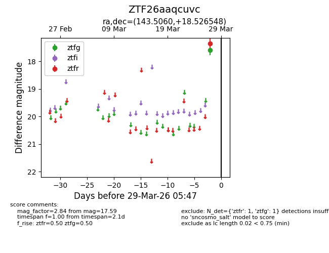
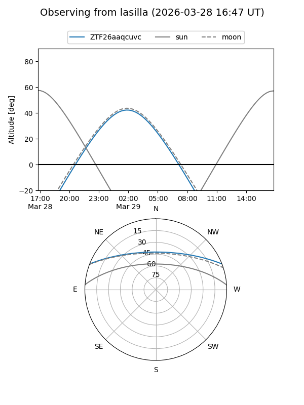
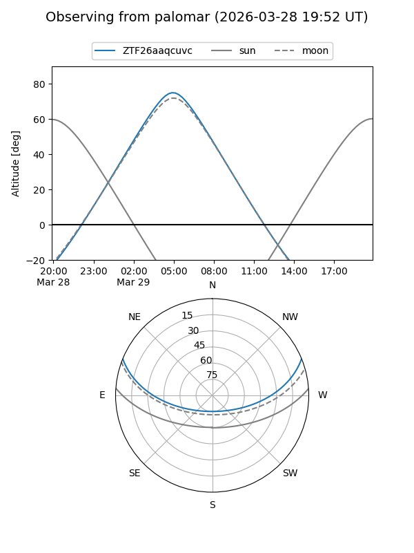

ZTF26aaqcuvc
Target ZTF26aaqcuvc at 2026-03-29 05:50
Aliases and brokers:
FINK: link
Lasair: link
ALeRCE: link
alt names
ZTF26aaqcuvc (ztf,fink_ztf)
Coordinates:
equatorial (ra, dec) = 143.5060,+18.52655
equatorial (HMS+DMS) = 09:34:01.45,+18:31:35.57
galactic (l, b) = (212.8397,+43.99318)
Flags:
Photometry:
last ztfg=17.59, ztfr=17.35
1 ztfg, 1 ztfr detections
Lightcurve

Visibility


Additional plots